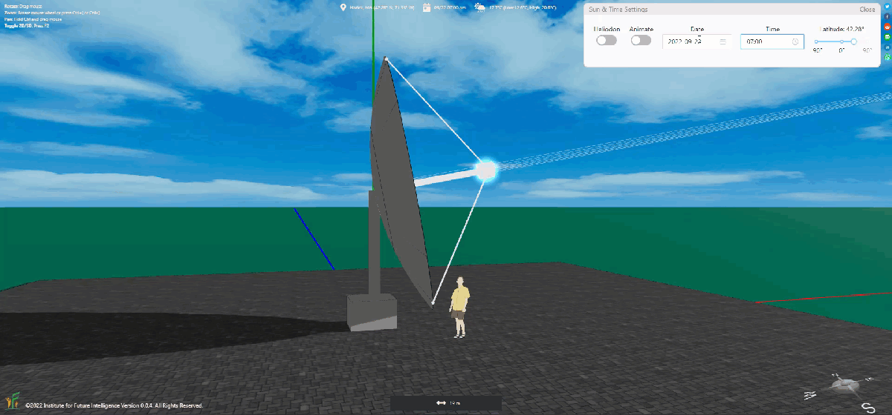
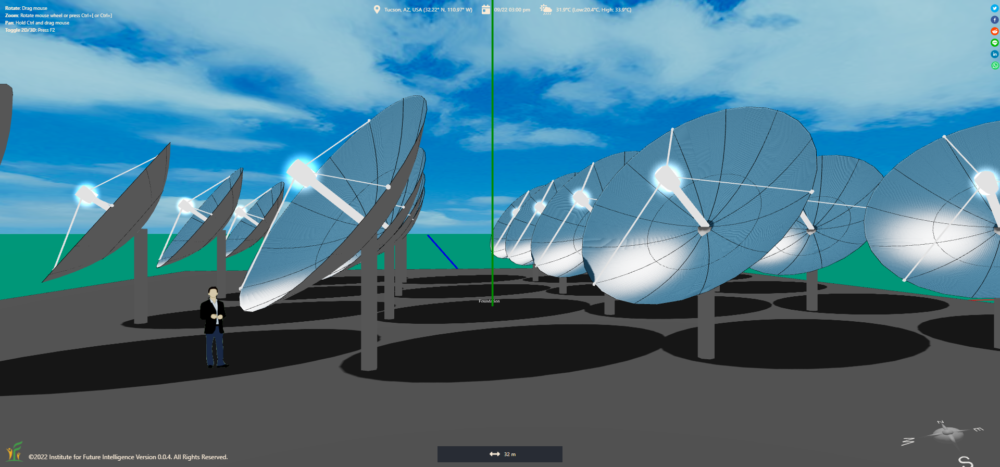
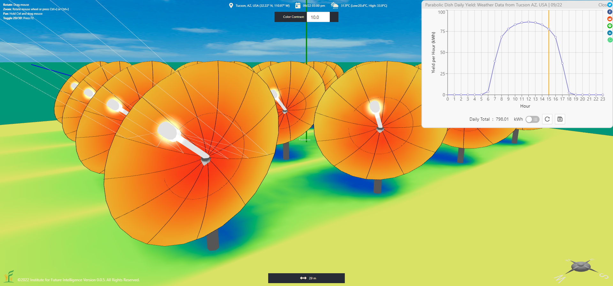

Modeling and Designing Parabolic Dishes in Aladdin
Using Aladdin to model parabolic dishes, animate their dual-axis sun tracking, and analyze their daily and yearly output with heatmaps.
Aladdin can be used to design both photovoltaic and concentrated solar power. In this article, I will show you how you can model a type of concentrated solar power (CSP) collector — parabolic dishes. An Aladdin model of a parabolic dish is embedded as follows for you to see what they look like. In real-world applications, a parabolic dish is usually coupled with a Stirling engine as such a combination can result in a high efficiency.
Animating the movement of parabolic dishes
A parabolic dish usually tracks the sun throughout the day using a dual-axis tracker such that it always faces the sun to maximize the solar input, as illustrated below.

Analyzing the outputs of parabolic dishes
Parabolic dishes are flexible in terms of deployment. You can use any number of parabolic dishes. In Aladdin, you can easily copy and paste a parabolic dish to create an array.

You can then calculate the daily and yearly outputs of each parabolic dish and their totals using "Analysis > Parabolic Dish" submenu. You can also use the heatmap tool to visualize the distribution of solar energy. Note that, the solar radiation heatmap includes indirect radiation that cannot be harnessed by a CSP collector such as a parabolic dish because we cannot focus indirect radiation that travels in random directions (in comparison, a photovoltaic solar panel can collect both direct and indirect solar radiation).

You may also notice that there is a color gradient in the heatmap along the radial direction on the surface of a parabolic dish. This is due to the projection effect of the direct radiation — Only the center of the dish faces the sun directly, and the further away a unit area is from the center, the more pronounced the projection effect is.
← Back to Aladdin